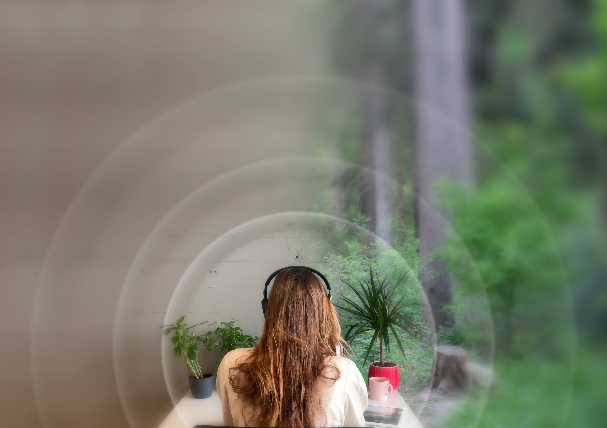
The Restorative Potential of Spatial Soundscapes
Challenge
The home used to be a place to unwind, recover from a long day, or spend time with family. In the traditional office setting there are clear boundaries that help employees detach from their work or home roles. However, working from home has become an integrated part of everyday life for many people, causing the home to be a place of demands as well. Research shows that the lack of physical boundaries between work and private life makes it difficult to mentally detach from work, recover from stress, and return to work with renewed attention.
The challenge of my master thesis was to design an intervention that could create a sense of separation and restoration within the same physical environment.
Research Question
“How to design a restorative-spatial soundscape for young professional knowledge workers in the home office?”
Approach
My research was grounded in Attention Restoration Theory (ART), proposed by psychologists Rachel and Stephen Kaplan, which suggests that restorative environments, such as nature, can support recovery from directed attention fatigue, which is a consequence of stress. Since immersion can enhance restorative potential, I investigated whether spatialized nature sounds could create a stronger sense of presence and perceived recovery than conventional non-spatial sound.
Through exploratory design research, including in-depth user interviews, a soundscape experiment, and a in-situ evaluation, a working prototype was developed. An international creative audio company specialized in algorithmically generated soundscapes, was involved as a stakeholder and provided expert input on the process.
Target Group
My research focused on young professionals (aged 20-29 years) who have limited home space available and who are working in the knowledge industry. Jobs in finance, management, professional services, and IT are most suitable for a hybrid working model.
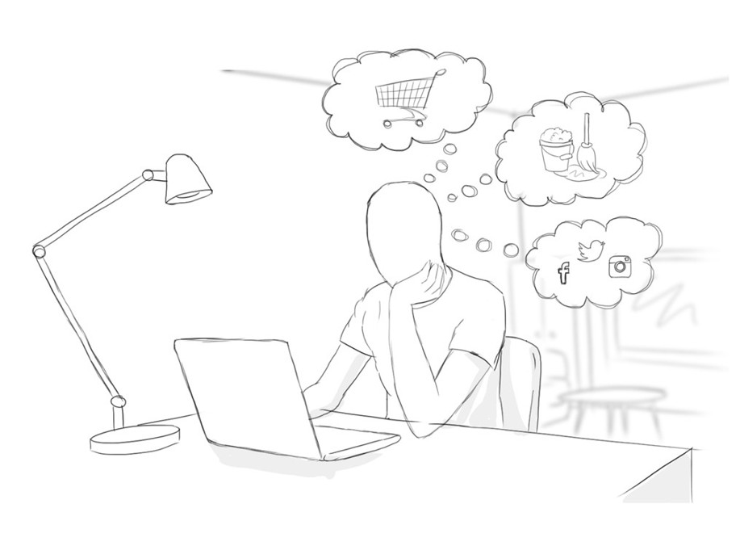
Outcome
The result was The Home Office Sound Zone: a spatial soundscape system that provides a change in ambiance to support the mental transition between work and home through spatial sound.
The soundscape system has two main modes: the restoration mode and the focus mode. During breaks, the system plays soft-fascinating spatialized (3D) nature sounds to support recovery from directed attention fatigue. By creating an immersive auditory environment with multiple sound layers, the concept aims to help users mentally detach from work, reduce distractions, and return to work with improved focus.
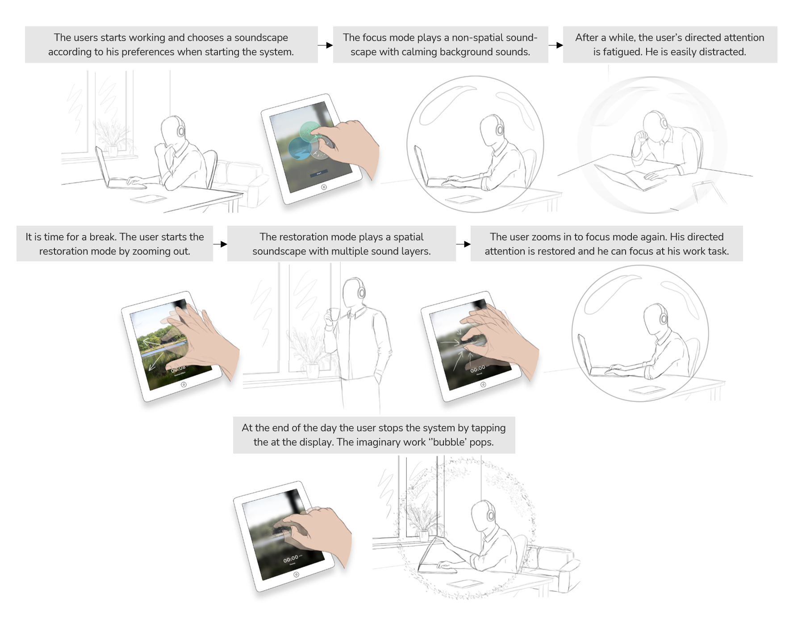
Product Solution
“A headphone-based spatial soundscape system that supports young professional knowledge workers to mentally detach and to inhibit distractions at the home office”
In contrast to the restoration mode, the focus mode plays during work time. The aim of this mode is to make the worker return to the ‘work flow’ more effortlessly. It creates a change of ambiance and, therefore, elicits sound association that help to mentally separate between home and work. The focus mode plays a non-spatial soundscape containing only the background sound layers, without unexpected sounds and huge contrasts that could distract the user from its work task.
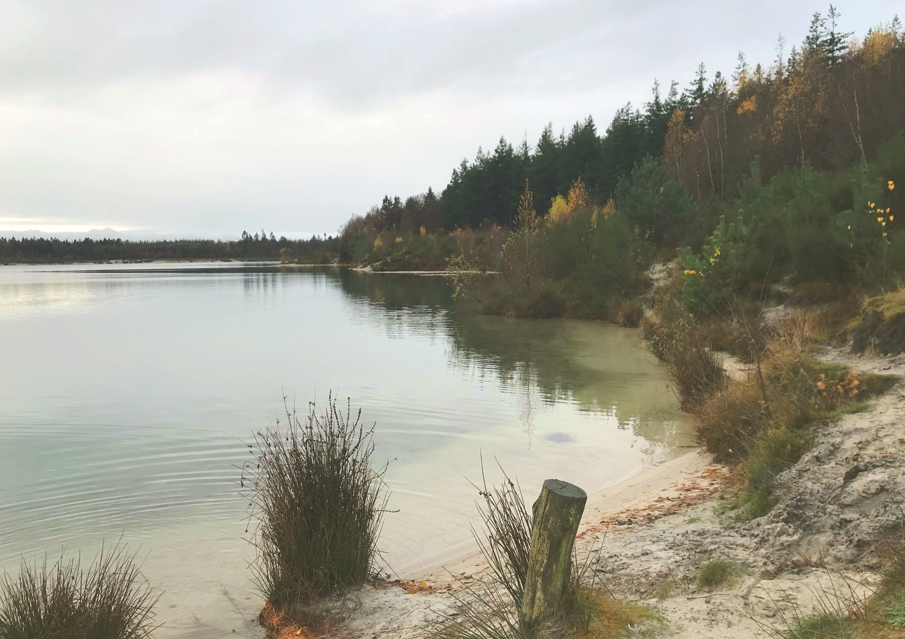
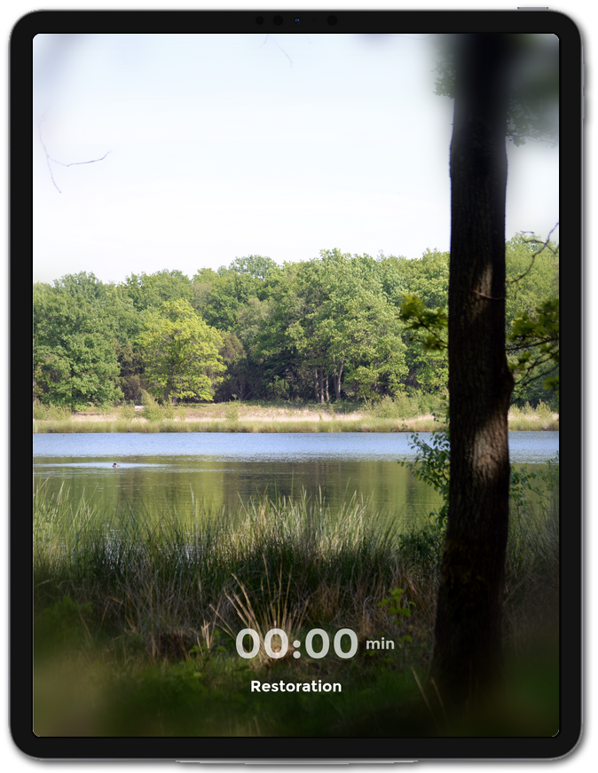
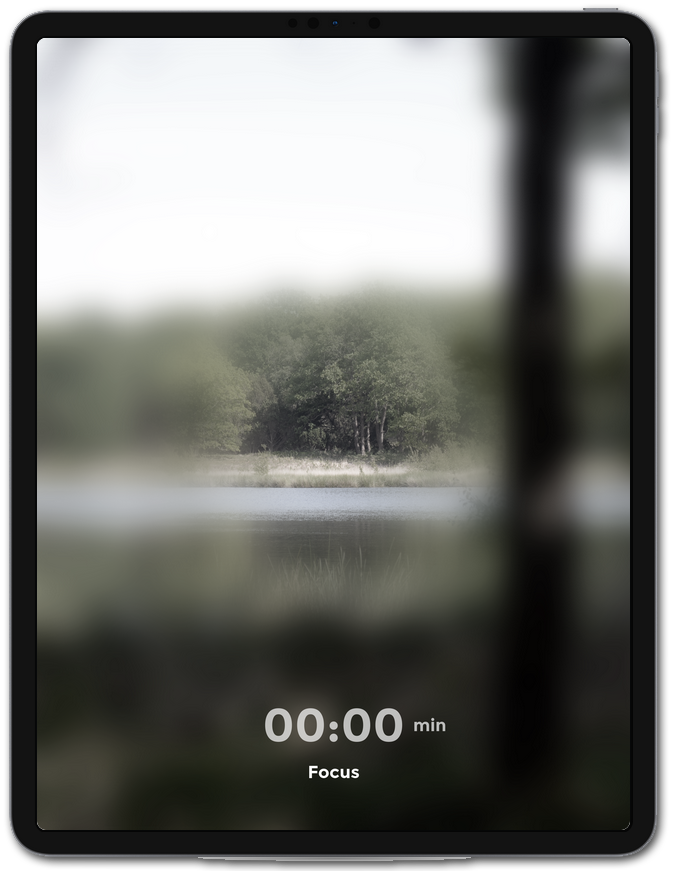
To transition between the modes, the metaphor of a ‘bubble’ is used. A display shows the imaginary bubble of the user’s attention. A small bubble indicates the focus mode and a large bubble indicates the restoration mode. The user transitions between the modes by zooming in and out. By gradually zooming in and out, sound layers are one by one (de)activated. At the end of the day, the user stops the system by puncturing the imaginary bubble through tapping on it.
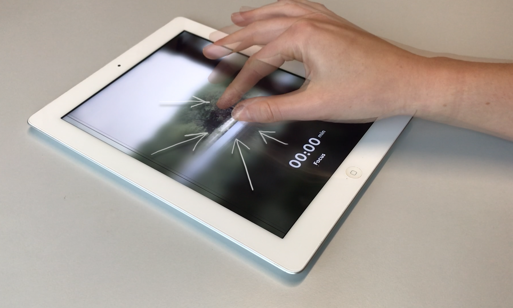
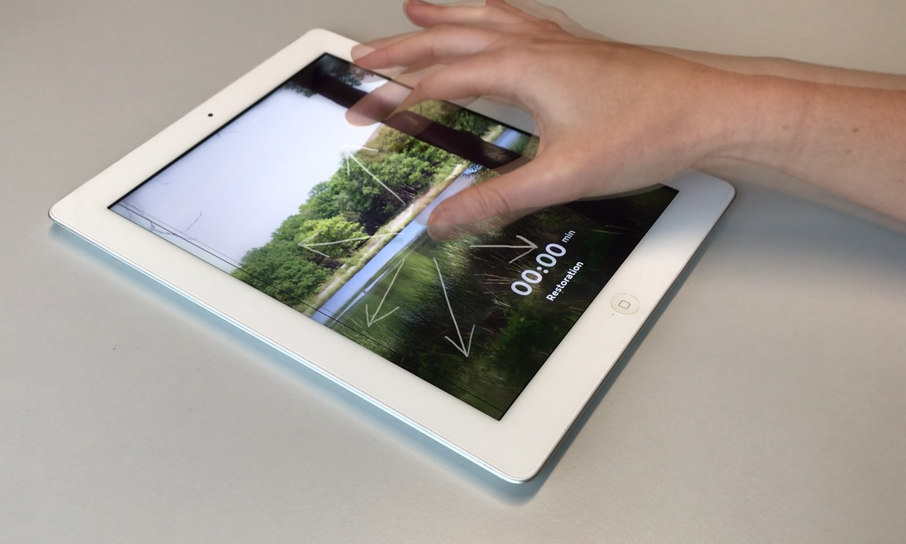
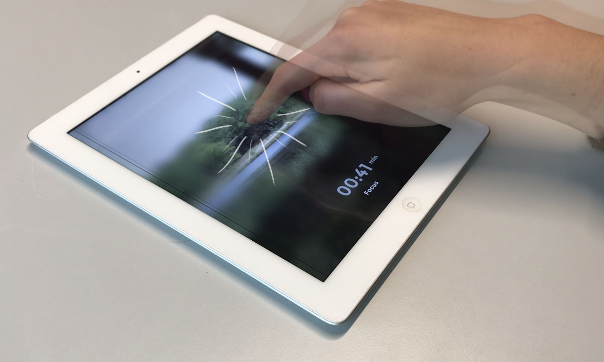
Design Process
Interviews
I conducted in-dept interviews with the target group to see whether the inability to psychologically detach is a recognizable problem when having limited space available, and if a restorative soundscape offers a potential solution. The results showed that the target group is more susceptible to distractions right after taking a break and that their breaks often take longer than planned. Since sound can help them mentally separate work and leisure through association, it can support them to get back in the work ‘flow’ more effortlessly.

Concept and Prototype
Based on the results from the user interviews, the ‘’Sound Bubble’’ concept was created. The concept is based on four principles gathered from the user interviews: association for mental separation, restoration for inhibition of distractions, user’s control, and system anticipation.

Furthermore, it was built on the idea of an imaginary ‘bubble’ to block out distractions and focus on work tasks and that sounds help separate work and leisure due to association.
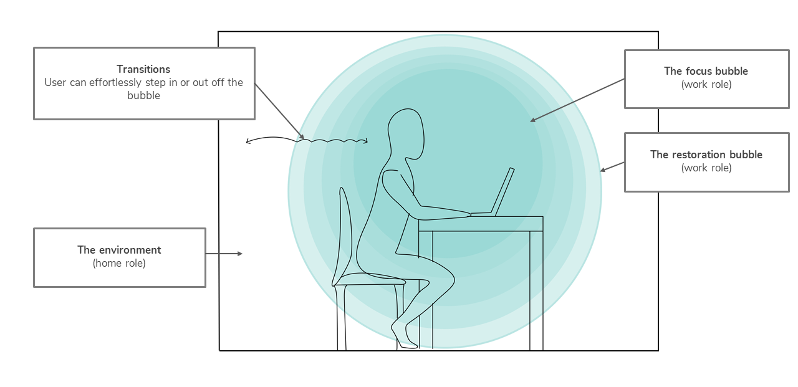
In order to develop and test the system, the first step was to figure out what natural elements a soundscape exactly requires to elicit a restorative experience. The soundscape design was inspired by a Dutch natural environment, called Gasselterveld. It is a nature reserve at the Hondsrug. Prior to the development of the soundscapes, binaural recordings were made at this location. Analysis of the recordings showed that the location contains several bird species (woodpeckers, blackbirds, robins, coal tits), wind, water, insects, and geese flying over.
The prototypes were developed with Audacity, Unity, and Processing. Open source audio tracks were edited in Audacity. These tracks were imported, placed as objects in the virtual scene, and spatially rendered in Unity. The final interaction prototype was developed using Processing.
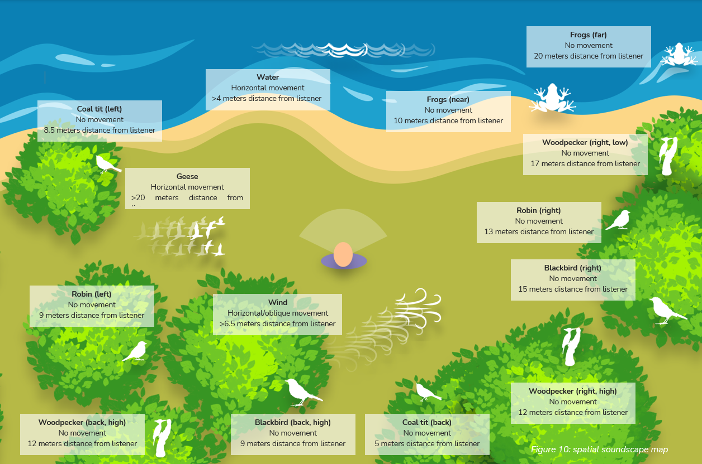
Experiment
I tested the restorative spatial soundscape with the target group to explore how spatial sounds differ from non-spatial sounds in their restorative potential. The results showed that spatial sounds increased the feeling of presence and revealed several design elements that could enhance restoration. Based on these insights, individual sounds were adjusted to feel more pleasant, less eventful, and therefore more restorative.
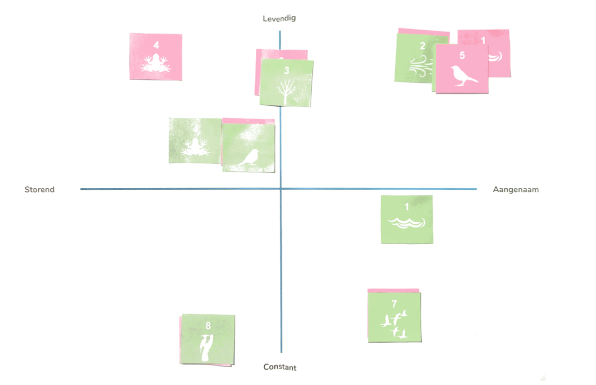
In-Situ Testing
The final restorative-spatial soundscape was tested in a user experience evaluation to see whether the system does what it is intended to do in the natural setting, namely psychologically detaching the user from work demands during breaks at the home office.
Relevance
The project proposed a design response to the negative effects of remote work on wellbeing and productivity. It also contributed to sound design research by exploring the potential applications of spatial audio as an emerging technology within everyday work and recovery contexts.